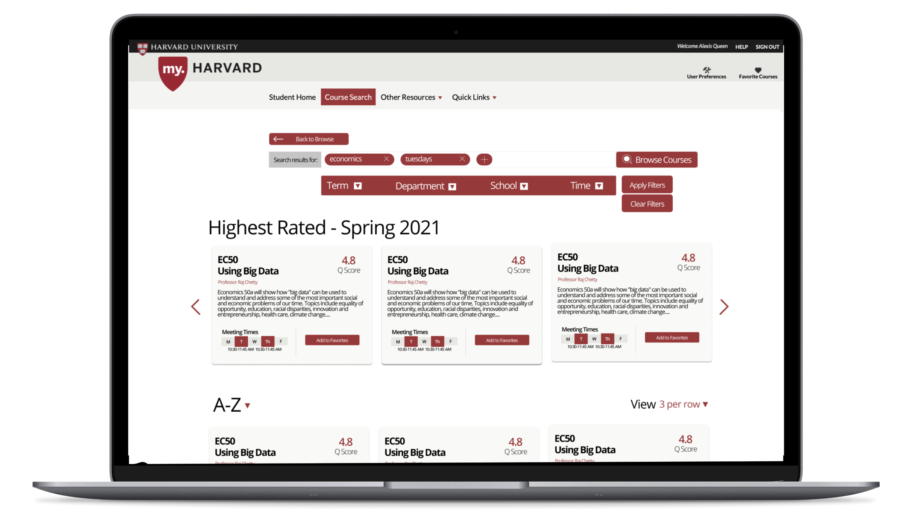
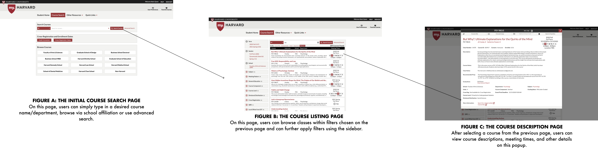
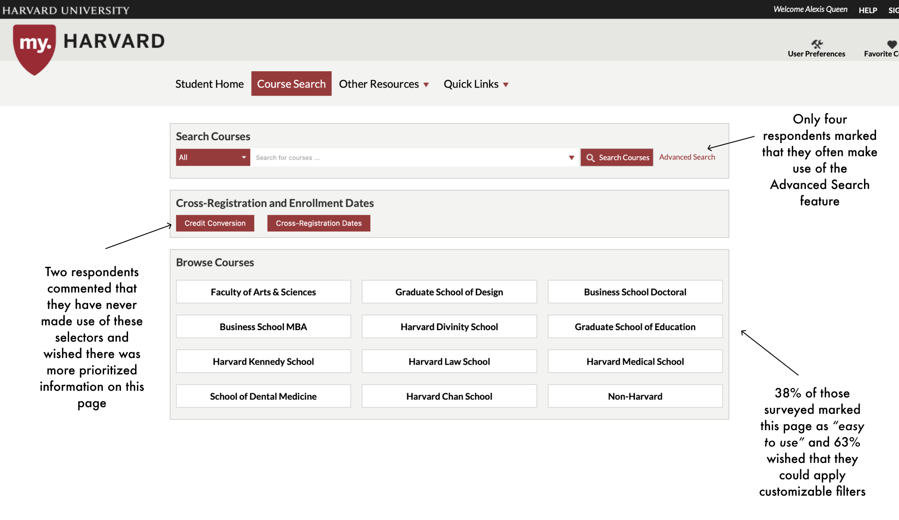
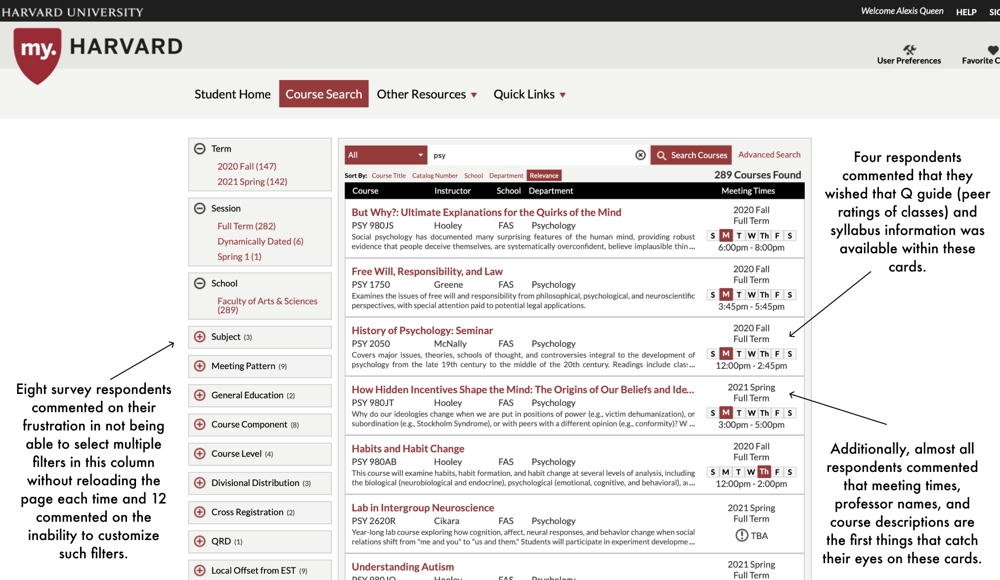
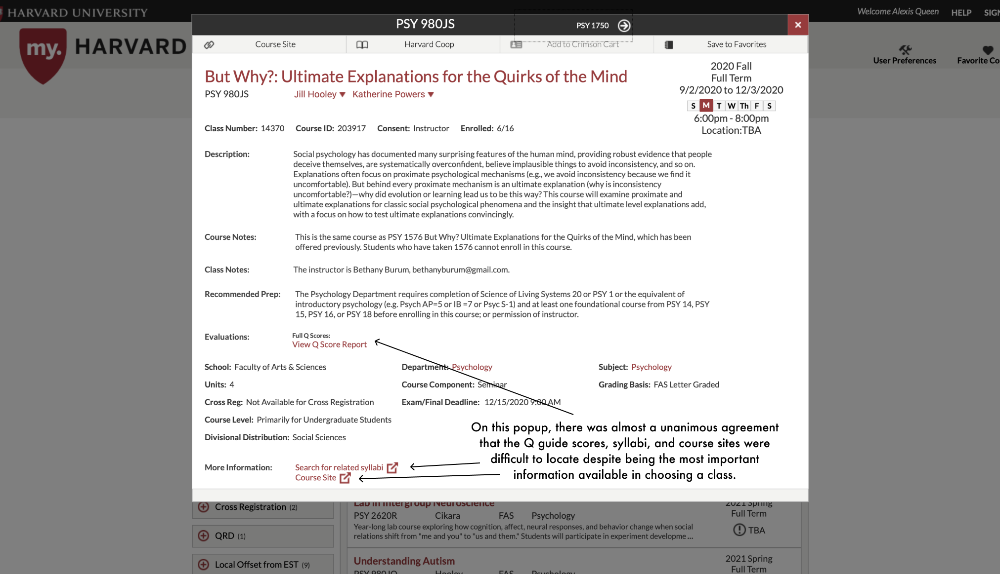

A My.Harvard Redesign
Making shopping week as easy as shopping.
Website • January 2021

Introduction
Every semester, Harvard undergraduates find the week before classes (shopping week) to be filled with advisor meetings, frantic
"what's an easy gened" texts to friends, and the inevitable crash of
my.harvard - the hub for course search, financial aid, and advisor directories.
With the stress of the semester and students scrambling to fit in interesting classes and concentration (Harvard lingo for "major") requirements,
searching for courses
should be the easiest part. However, due to overwhelming and downright confusing design, important information about classes often gets lost - making shopping week that much more difficult.
Understanding the User
When looking for classes for Spring 2021, I knew what I was going to prioritize given the remote learning model: Q Guide Scores, or Harvard lingo for the peer reviews of courses. When looking for classes, I wanted to compare how various teachers were adapting to Covid-19 and accomodations for online work - all features best described by other students. I know that in my course search process, I often find myself searching through syllabi for various testing policies and readings. Still, I wanted to better understand how my peers are using my.harvard and where their priorities lie.
I surveyed 27 undergraduates via a self-reporting Google form. In my research, I primarily focused on the 3 screens that are the most vital to the course search process: the initial course search page, the course listings page, and the course details popup.

In my survey, I asked questions about student usage in a given semester, primary function of the my.harvard platform and most importantly, I presented students with the three screens above and found a variety of pain points.
User Pain Points
- Pain Point 1: There is too much unimportant information on a given page. Of those surveyed, 86% checked a box describing the screens as overwhelming and commented that the screens failed to prioritize the most vital information in choosing a course.
- Pain Point 2: The most important information to students is hidden or difficult to locate. The majority of survey respondents commented that 3 notable items were difficult to find on every page - 1.) Q Guide Information (peer reviews of classes), 2.) Syllabi access, and 3.) Canvas sites.
- Pain Point 3: There is no way to apply multiple filters at once without having to reload the page for each filter. Eight survey respondents commented that in order to apply multiple filters in the course listing screen, they had to contiuously reload the page - slowing down the process.



So, why does this matter?
Pre-Covid, shopping week was a fun, exciting week filled with small talk and excitement about the semester to come. During my freshman year, I could talk about classes with friends over meals at Berg. I could ask big sibs about class reccomendations as we walked to the Science Center. Professors were an office hour away and you could drop in between classes. Now, undergraduates are spending most of their time on the dreaded Zoom platform. Social isolation is on the rise and the process of going to an office hour or hopping on a call is draining. Making the course search function a bit easier and bit more intuitive could allow students to feel more excited about classes and remove one small burden in what is already an incredibly stressful and isolating academic environment.
The Problem:
The My.Harvard course search feature doesn't prioritize relevant information and doesn't allow for enough customization in search.
Goal:
To simplify the interface with more relevant information and to reduce search time for students.


 I reimagined the way we search for classes - opting for a tag based system of keywords. With that, I hoped that finding a class about economics and data that met on Tuesdays could be streamlined by allowing users to go through that process from the start.
I reimagined the way we search for classes - opting for a tag based system of keywords. With that, I hoped that finding a class about economics and data that met on Tuesdays could be streamlined by allowing users to go through that process from the start.